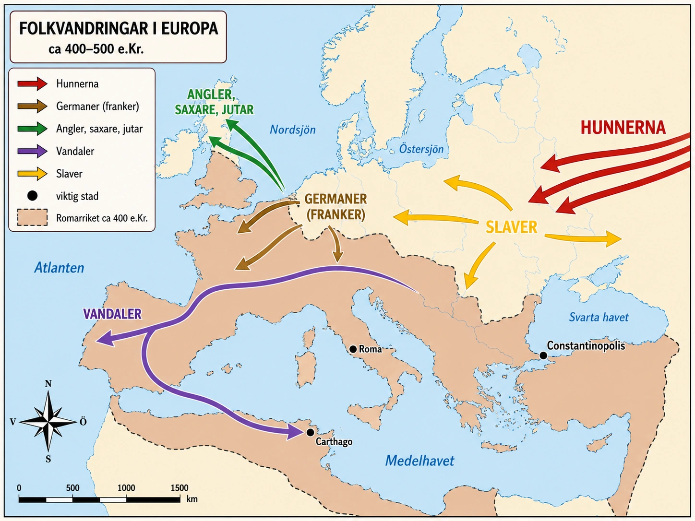
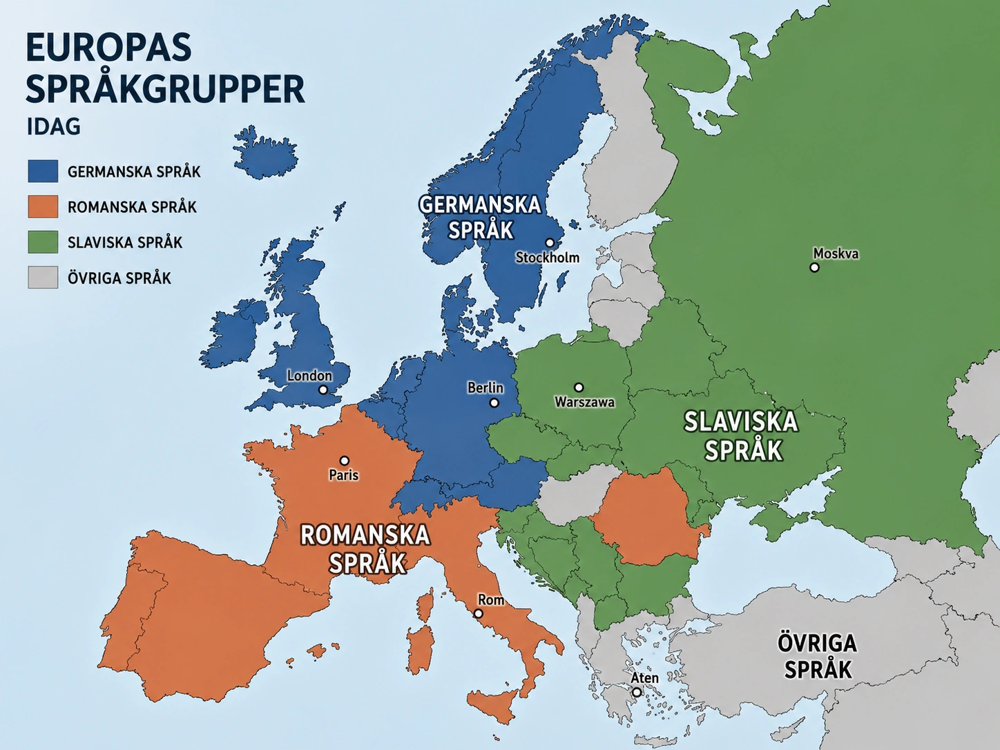

— när folk i rörelse formade Europas karta —
För nästan tvåtusen år sedan styrdes nästan hela Europa från en enda stad — Rom. Men för cirka 1500 år sedan började Rom rasa samman. Folk flyttade. Nya riken växte fram. Den här tiden kallas folkvandringstiden.
Romarriket sträckte sig från Skottland i norr till Egypten i söder. Det var enormt. Men att hålla ihop ett så stort rike var svårt. Romarna hade problem med pengar, politiska bråk och svaga gränser. Riket blev långsamt svagare.
Samtidigt började ett folk som kallades hunnerna röra sig västerut. De kom från stäppen i öster. Hunnerna var skickliga ryttare och farliga krigare. När de rörde sig västerut blev andra folk tvungna att fly undan.

Folken som flydde undan hunnerna gick mot Romarrikets gränser. Romarriket, som redan var svagt, kunde inte stoppa dem. På så sätt blev det en kedjereaktion: hunnerna pressar germanska folk, germanerna pressar Rom, och nya riken börjar växa fram.
I nästa del ska vi se var folken slog sig ner — och hur det är därför Europa ser ut som det gör idag.
För nästan tvåtusen år sedan styrdes nästan hela Europa, Nordafrika och stora delar av Mellanöstern från en enda stad — Rom. Det var ett av historiens största riken. Men för cirka 1500 år sedan började det rasa samman. Människor flyttade. Folkgrupper bröt upp och bildade nya riken. Karta efter karta ritades om. Den här perioden kallas folkvandringstiden, och den brukar räknas från 300-talet till 500-talet e.Kr.
För att förstå folkvandringstiden måste man förstå Romarriket. Vid sin storhetstid sträckte sig riket från Skottland till Egypten, från Spanien till Mesopotamien. Det var ett av historiens största imperier.
Men ett så stort rike kostar enormt mycket att hålla ihop. På 200- och 300-talen hade Rom problem på flera fronter samtidigt. Ekonomin var ansträngd. Inflationen tärde på pengarna. Inbördeskrig om kejsartronen var vanliga — vid ett tillfälle hade riket femtio kejsare på femtio år. Gränserna var långa och svåra att försvara. Romarriket var fortfarande mäktigt, men det började bli skört.
På 300-talet delades riket administrativt i två halvor: den västra delen, med huvudstaden Rom (senare Ravenna), och den östra delen, med huvudstaden Konstantinopel. Tanken var att två kejsare lättare kunde försvara ett så stort rike. Men det löste inte de djupare problemen.
I slutet av 300-talet började något hända längs Romarrikets östra gränser. Ett folk vi kallar hunnerna rörde sig västerut från stäppen i centrala Asien. Hunnerna var nomader — de levde av sina hästar och boskap och rörde sig över stora avstånd. De var dessutom skickliga ryttarkrigare som kunde skjuta pilbåge i full galopp.
När hunnerna kom västerut blev folkgrupper som bodde i deras väg pressade. Många av dessa folk var germaner — ett samlingsnamn för flera folkgrupper i norra och mellersta Europa. Germanerna talade besläktade språk men var inte ett enda folk under en kung. De var många olika grupper: goter, franker, vandaler, angler, saxare och andra.
När hunnerna pressade germanerna västerut, började germanerna i sin tur pressa mot Romarrikets gränser.
Det är detta som gör folkvandringstiden så speciell. Hunnerna behövde aldrig ens erövra Romarriket. Bara deras rörelse västerut räckte för att sätta hela Europa i rörelse.
I slutet av 300-talet visade sig hur svår situationen blivit. En grupp goter — som flytt undan hunnerna — hade fått skydd inne i Romarriket. Men behandlingen blev dålig, och de gjorde uppror. Vid staden Adrianopel besegrade goterna en romersk armé, och kejsaren själv stupade i slaget. Det var en chockerande händelse. För första gången på mycket länge hade en romersk huvudarmé blivit krossad av ett folk man tidigare betraktat som barbarer.
Efter Adrianopel blev gränserna alltmer porösa. Fler folkgrupper rörde sig in i romerska områden — vissa som flyktingar, andra som erövrare, många båda samtidigt. Romarriket kunde inte längre stoppa dem.
Man kan beskriva det som en kedjereaktion:
Hunnerna rör sig västerut → germanska folk pressas undan → de söker sig in i Romarriket → gränser och arméer överbelastas → nya riken börjar växa fram på romersk mark.
I nästa del ska vi se var alla dessa folk slog sig ner — och varför det fortfarande spelar roll för hur Europa ser ut idag.
För nästan tvåtusen år sedan styrdes nästan hela Europa, Nordafrika och stora delar av Mellanöstern från en enda stad — Rom. Det var ett av historiens största riken. Men för cirka 1500 år sedan började det rasa samman. Människor flyttade. Folkgrupper bröt upp och bildade nya riken. Karta efter karta ritades om. Den här perioden kallas folkvandringstiden — på tyska Völkerwanderung, på engelska Migration Period. Den brukar räknas från 300-talet till 500-talet e.Kr., även om processen tog ännu längre tid och även om begreppet "folkvandring" är historiografiskt omdiskuterat. Det är där vår berättelse om medeltiden börjar.
När vi pratar om "folkvandringstiden" är det lätt att tänka sig en kort, dramatisk period då alla folk flyttade på sig samtidigt. Verkligheten är mer komplicerad. Processen tog flera århundraden, och den bestod av många olika rörelser som pågick parallellt. Vissa folk flyttade som flyktingar. Andra som erövrare. Många båda samtidigt — och ofta i flera omgångar.
Det finns till och med historiker som menar att uttrycket "folkvandring" är missvisande. På tyska kallas perioden Völkerwanderung, "folkens vandring", och det engelska Migration Period är liknande. Men i samtiden upplevdes det inte som en organiserad flytt. För dem som levde då var det ett ostadigt, våldsamt och ofta plötsligt skeende. Familjer förlorade hem från ena året till det andra. Städer plundrades. Nya makthavare dök upp. Det var ingen vandring i ordets fredliga mening — det var en lång kris.
Romarriket hade problem som hade byggts upp under lång tid. Statens skattebas krymte i takt med att jordbruksprovinser försvagades. Militären började alltmer bestå av legosoldater — ofta germaner — som var lojala mot sina officerare snarare än mot kejsaren. Politiken präglades av ständiga inbördeskrig. På 200-talet hade det funnits perioder med femtio kejsare på femtio år, många av dem mördade av sina egna soldater.
På 300-talet hade riket administrativt delats i två halvor: en östlig med huvudstaden Konstantinopel, en västlig med huvudstaden först Rom och senare Ravenna. Tanken var att försvaret skulle bli lättare med två kejsare. Den östra halvan — som ibland kallas Östromerska riket eller senare Bysantinska riket — visade sig livskraftig och skulle överleva i tusen år till. Den västra halvan — Västromerska riket — var den som föll under folkvandringstiden.
Det är värt att stanna upp där. Romarriket föll alltså inte i sin helhet. Den östra halvan klarade sig. Det var den västra halvan som inte överlevde trycket från germanska folk under 400-talet.
Mycket av kedjereaktionen utlöstes av hunnerna, ett ryttarfolk från stäppen norr om Svarta havet. Hunnerna var nomader som rörde sig snabbt över stora avstånd och var skickliga bågskyttar från hästryggen. De krigade på ett helt annat sätt än romarna och deras grannar — inte i tunga formationer utan med snabba räder, låtsasreträtter och plötsliga anfall.
Men hunnerna var inte bara farliga som krigare. De var farliga som rykte. Bara nyheten om att hunnerna närmade sig kunde få städer att betala stora summor i tribut för att slippa angrepp, och få folkgrupper att fly hundratals kilometer västerut. Mest känd är deras ledare Attila, som regerade i mitten av 400-talet och pressade både Östrom och Västrom på enorma summor pengar.
Du kan läsa mer om hunnerna i djupdykningen längst ner på sidan.
I slutet av 300-talet blev en vändpunkt. En grupp goter som flytt undan hunnerna hade fått skydd inne i Romarriket. Romarna behandlade dem dåligt — gav dem för lite mat, försökte utnyttja dem ekonomiskt. Goterna gjorde uppror, och vid staden Adrianopel mötte de en romersk huvudarmé under den östromerske kejsaren. Romarna förlorade fullständigt. Kejsaren själv stupade.
Det är svårt att överskatta vad detta betydde. Det hade gått åtta hundra år sedan en romersk huvudarmé senast blev så fullständigt krossad. Adrianopel chockade Romarriket på samma sätt som senare händelser har chockat andra stora makter — som ett brutalt bevis på att gränsen hade brustit.
Efter Adrianopel blev fler folkgrupper djärvare. På 400-talet kom våg efter våg av germaner in i Romarrikets gamla områden. Visigoter plundrade Rom — första gången på 800 år som främmande styrkor tagit staden. Vandaler tog Nordafrika. Angler och saxare började bosätta sig i Britannien. Frankerna växte i Gallien.
En sak är värd att komma ihåg. För många av de folk som rörde sig in i Romarriket var det inte bara våld och plundring som lockade. Romarrikets områden var rika. Där fanns städer, vägar, jordbruksmark, handel och kunskap. För en germansk grupp som flydde undan hunnerna kunde livet inne i Romarriket vara bättre — om man kunde få komma in och få land att bruka. Många germaner ville inte förstöra Rom. De ville bli en del av det. Många germanska kungar såg sig själva som arvtagare till romersk kultur och behöll latinska titlar, romersk administration och kristendomen.
Det är en av folkvandringstidens paradoxer. Folk som flyttade in i Romarriket bidrog både till dess sönderfall och till att stora delar av dess kultur levde vidare.
I nästa del ska vi följa folken till deras nya hemvister — och se hur folkvandringstiden formade det Europa vi känner igen idag.
Frankerna var en germansk folkgrupp. De bosatte sig i det område som idag är Frankrike. Och det är därför landet heter just Frankrike — det betyder "frankernas rike".
Andra germanska folk flyttade också. Angler, saxare och jutar tog sig över havet till Britannien. Namnet England kommer från anglerna — det betyder "anglarnas land".
Vandalerna gick längst. De tog sig genom Europa, över Medelhavet och slog sig ner i Nordafrika. På 400-talet plundrade de Rom. Det är därför ordet vandalism — att förstöra saker med flit — kommer från deras namn.
En annan grupp folk kallas slaverna. De spred sig över östra och sydöstra Europa. De bosatte sig i områden som idag är Polen, Tjeckien, Ukraina, Ryssland och länderna på Balkan. Slaviska språk talas där än idag.
I dag finns det olika språkfamiljer i Europa. I Frankrike, Spanien och Italien talas språk som kommer från latinet — alltså från romarna. I Tyskland, Storbritannien och Skandinavien talas germanska språk. I Polen, Ryssland och stora delar av Östeuropa talas slaviska språk.

Det här är ingen slump. Det är resultatet av folkvandringstiden.
Allt detta började för 1500 år sedan, när folken började vandra.
När Västromerska riket försvagades började nya kungariken växa fram på dess gamla mark. Det första och kanske viktigaste var frankernas rike.
Frankerna var en germansk folkgrupp som slog sig ner i området kring dagens Frankrike och västra Tyskland. När Västrom inte längre kunde kontrollera området tog frankerna över allt mer makt. Under kungen Klodvig, som levde kring år 500, enades flera frankiska grupper till ett starkt rike. Klodvig lät dessutom döpa sig till kristendomen — vilket var ett smart politiskt drag, för det gav honom stöd av både kyrkan och de många kristna människor som redan bodde i området.
Frankerna är viktiga eftersom de visar ett centralt mönster i folkvandringstiden. Germanerna förstörde inte alltid det romerska — de byggde vidare på det. Klodvig tog över romersk administration, lät sig döpas till kristendomen, behöll latin som ett av rikets språk. Och Frankrike fick sitt namn från frankerna.
Längre norrut, över Nordsjön, hände något annat. När de romerska legionerna lämnade Britannien i början av 400-talet blev ön sårbar. Då började tre germanska folkgrupper — angler, saxare och jutar — att ta sig dit från områden kring dagens norra Tyskland och Danmark.
De grundade flera mindre riken i Britannien, och med tiden kom deras språk att forma området. Namnet England kommer från anglerna — det betyder "anglarnas land". Det engelska språket har sina rötter i de germanska språk dessa folk förde med sig.
Den mest dramatiska rörelsen gjorde vandalerna. De var också en germansk folkgrupp, men de slog sig inte ner i Europa. De vandrade genom Europa, över Pyrenéerna in i Spanien, och därifrån vidare över Medelhavet till Nordafrika. Där byggde de upp ett rike med centrum i Karthago — ett område som var en av Romarrikets viktigaste jordbruksregioner.
På 400-talet seglade vandalerna in mot Italien och plundrade staden Rom. Det blev en berömd händelse — Rom hade länge varit symbolen för världsmakt och civilisation, och nu hade en germansk grupp tagit staden för andra gången.
Och här kommer en språklig kuriositet: ordet vandalism — alltså att förstöra saker med flit — kommer från vandalerna. Efter plundringen av Rom fick de rykte om sig att vara särskilt brutala. Senare blev "vandal" ett skällsord för någon som förstör kultur och egendom. Historiker idag menar dock att vandalerna troligen inte var värre än andra krigiska folk under samma tid. Men namnet levde kvar i språket.
Allt detta gällde germanska folk i Västeuropa. Men samtidigt pågick en lika viktig rörelse i öster: slavernas spridning.
Slaverna kom ursprungligen från områden kring dagens östra Polen, västra Ukraina och Vitryssland. Under och efter folkvandringstiden började slaviska grupper sprida sig åt tre håll. Västerut bosatte de sig i områden som idag är Polen, Tjeckien och Slovakien. Söderut tog de sig över Donau in på Balkan, där de blev grunden till serber, kroater, slovener, bulgarer och andra folk. Österut spred de sig över de stora slätterna i dagens Ryssland, Ukraina och Vitryssland.
Slaverna är ofta de glömda i folkvandringstiden — de gjorde inte lika dramatiskt avtryck i romerska källor eftersom de inte plundrade Rom eller besegrade kejsare. Men deras spridning förändrade Europa lika mycket som germanernas.
Vad hände då med själva Romarriket? År 476 e.Kr. avsattes den siste västromerske kejsaren. Den dagen brukar räknas som slutet för Västromerska riket.
Men Östromerska riket — också kallat Bysantinska riket — levde vidare i tusen år till. Och även i väster levde mycket av det romerska arvet kvar. Nya germanska kungar tog över romerska vägar, städer, lagar, jordbruk och kristendom. Det romerska försvann inte över en natt — det blandades med germanska sätt att leva och formade något nytt.
Folkvandringstiden hände för 1500 år sedan. Ändå kan vi se dess spår överallt i Europa än i dag — kanske tydligast när vi tittar på språk.
I södra och västra Europa — Frankrike, Spanien, Italien, Portugal, Rumänien — talas språk som utvecklades ur det romerska latinet. De kallas romanska språk. I norra och nordvästra Europa — Tyskland, England, Skandinavien, Nederländerna — talas germanska språk. Och i östra och sydöstra Europa — Polen, Tjeckien, Ryssland, Ukraina, Serbien, Bulgarien — talas slaviska språk.
Det här är ingen slump. Det är direkt resultat av folkvandringstiden. När romare, germaner och slaver bosatte sig i olika delar av Europa förde de med sig sina språk, sina seder och sina kulturer. De där spåren har sedan dess utvecklats på olika sätt — men grunden lades då.
På samma sätt går många landgränser i Europa fortfarande tillbaka på var folkgrupperna slog sig ner. Att Frankrike heter Frankrike. Att England heter England. Att Polen är polskt och Ryssland ryskt. Allt går tillbaka på folk som flyttade för femton hundra år sedan.
Det är det som gör folkvandringstiden så viktig att förstå — inte som något fjärran och avlägset, utan som en av de processer som bygger upp den värld vi själva lever i.
I nästa avsnitt ska vi titta närmare på kyrkans roll under medeltiden. För när Romarriket föll i väster, var det kyrkan som blev en av de starkaste krafterna som höll Europa samman.
När Västrom försvagades skapades inte ett tomrum. På romersk mark växte istället nya kungariken fram, ofta byggda ovanpå det romerska som fanns kvar. Det är värt att tänka på processen så här: de germanska folken förstörde inte alltid Rom. De tog över det. Och i många fall ville de fortsätta vara romare — fast med en germansk kung överst.
Det viktigaste av dessa nya riken växte fram i området kring dagens Frankrike och västra Tyskland. Där bodde frankerna, en germansk folkgrupp som länge funnits längs Romarrikets norra gräns. Under Klodvig, kung omkring år 500, enades flera frankiska grupper till ett starkt rike.
Klodvig gjorde två avgörande val. För det första lät han döpa sig till katolsk kristendom. Det var inte självklart — många germanska kungar var arianer, en kristen riktning som kyrkan i Rom inte godkände. Genom att välja katolicismen knöt Klodvig sig till påven i Rom och fick stöd av den katolska kyrkan i hela Västeuropa.
För det andra byggde han vidare på romersk administration. Skattesystem, latin som skriftspråk, romerska tjänstemän, romersk lag — allt detta behöll han. Frankerriket blev därför inte ett "barbariskt" rike som ersatte Rom, utan ett germanskt-romerskt kombinationsrike som blev en av medeltidens centralkrafter.
Detta är ett mönster vi ser hos många germanska härskare. De såg sig själva inte som romarrikets förstörare utan som dess arvtagare. De behöll latinet, behöll romerska tjänstemän, behöll kyrkan. Men de styrde själva. Folkvandringstiden var inte bara ett brott — den var också ett övertagande och ombyggande.
Längre norrut hade en annan process pågått. Romerska Britannien hade varit en provins i nästan fyra hundra år, men i början av 400-talet lämnade legionerna ön — de behövdes på andra fronter. Britannien lämnades öppen.
Det var då tre germanska folkgrupper började ta sig över Nordsjön: angler, saxare och jutar. De kom från områden kring dagens norra Tyskland och Jylland (Danmark). De bosatte sig i Britannien och grundade flera mindre kungariken. Den ursprungliga keltiska befolkningen pressades undan mot väster — det är därför keltiska språk fortfarande talas i Wales, Skottlands högland och Irland.
Det engelska språket har sina rötter i de germanska språk som dessa folk förde med sig. Namnet England betyder "anglarnas land". Och även namnen Sussex (sydsaxarnas område), Wessex (västsaxarnas) och Essex (östsaxarnas) går tillbaka på samma folkrörelse.
Den mest dramatiska resan gjorde vandalerna. De var en germansk folkgrupp som under några decennier rörde sig genom hela Västeuropa: från sitt ursprungsområde i östra Europa genom Gallien, över Pyrenéerna in i Spanien, och därifrån — på 430-talet — över Medelhavet till Nordafrika.
Där byggde de upp ett kungarike med centrum i den gamla feniciska och romerska staden Karthago. Det var ett strategiskt val. Nordafrika var en av Romarrikets viktigaste jordbruksregioner — staden Rom hade länge fått en stor del av sitt vete därifrån. När vandalerna tog över området kunde de både kontrollera handeln på Medelhavet och pressa Rom genom att hota dess matförsörjning.
På 400-talet seglade vandalerna in mot Italien och plundrade Rom. Det var andra gången inom kort tid som främmande styrkor tagit staden — visigoterna hade plundrat den tidigare. Men vandalernas plundring blev mer ihågkommen, av delvis oklara skäl. Det är härifrån det moderna ordet vandalism kommer.
Och här är det värt att stanna upp. Ordet vandalism — att förstöra saker med flit, riva ner det andra människor byggt — myntades inte under själva plundringen. Det är en mycket senare uppfinning. På 1700-talet, under franska revolutionen, började franska skribenter använda vandalisme som en metafor för förstörelse av kultur. De refererade till vandalerna eftersom de hade en bild av dem som särskilt brutala plundrare.
Men var de det? Modernare historiker har varit kritiska. Vandalerna verkar inte ha varit värre än andra krigiska folkgrupper under samma tid. Deras plundring av Rom var visserligen omfattande, men källorna antyder att den var ganska disciplinerad — påven lyckades enligt traditionen förhandla med dem så att de skulle skona civilbefolkningen. Senare romerska skribenter, som hade politiska skäl att svartmåla just vandalerna, gjorde dem mer brutala än de troligen var.
Det är en lärorik liten historia om hur historieskrivning fungerar. Ett folk får ett dåligt rykte, ryktet lever vidare i språket, och ordet "vandal" blir kvar långt efter att själva folket är borta. Vandalerna existerar i dag bara som ett ord — och som ett ord betyder de något de troligen aldrig riktigt var.
Allt detta — frankerna, anglarna, vandalerna — handlade om germanska folk i västra Europa. Men det är bara halva historien. Samtidigt pågick en annan stor folkrörelse i östra Europa: slavernas spridning.
Slaverna bodde ursprungligen i området kring östra Polen, västra Ukraina och Vitryssland. Under och efter folkvandringstiden började de spridas åt tre håll: västerut till det som idag är Polen, Tjeckien och Slovakien; söderut över Donau in på Balkan; och österut över de stora slätterna i dagens Ryssland och Ukraina.
Det är värt att stanna upp och tänka på vidden av detta. På bara några århundraden täckte slaviska språk en yta från Adriatiska havet i söder till Östersjön i norr, och från Elbe-floden i väster till långt in i dagens Ryssland i öster. Det är en av Europas största kulturella expansioner någonsin.
Ändå är slaverna nästan osynliga i de flesta västeuropeiska läroböcker. Varför? Delvis för att de inte lämnade några skriftliga källor om sig själva. Delvis för att västeuropeisk historieskrivning fokuserat på Västeuropa. Och delvis för att slaverna spred sig långsamt och i tystnad — utan att plundra Rom eller besegra kejsare. De gjorde sällan dramatiska avtryck i andras källor. Men de förändrade Europa lika grundligt.
Du kan läsa mer om slaverna i djupdykningen längst ner på sidan.
År 476 e.Kr. avsattes den siste västromerske kejsaren, en pojke vid namn Romulus Augustulus. Den dagen brukar räknas som slutet för Västromerska riket. Östromerska riket — också kallat Bysantinska riket — levde däremot vidare med Konstantinopel som huvudstad ända till 1453.
Men frågan om Roms fall är mer komplicerad än ett datum. Mycket av det romerska levde vidare i de germanska rikena: latinet, kristendomen, vägarna, lagarna, sätten att styra. Många historiker idag talar därför hellre om en lång övergång från antiken till medeltiden, snarare än ett plötsligt fall. Vill du fördjupa dig i den frågan, finns en djupdykning om just det längst ner.
Allt detta händer för 1500 år sedan. Och ändå ser vi spår av det varje gång vi tittar på en Europakarta.
I södra och västra Europa — Frankrike, Spanien, Italien, Portugal, Rumänien — talar man språk som utvecklades ur det romerska latinet. De kallas romanska språk, och de blev kvar där romersk kultur sjönk djupast. I norra och nordvästra Europa — Tyskland, England, Skandinavien, Nederländerna — talas germanska språk, efter de folk som slog sig ner där under folkvandringstiden. Och i östra och sydöstra Europa talas slaviska språk, från Polen i nordväst till Ryssland och Bulgarien.
Detta är inte en slump. Det är resultatet av folkvandringstiden. De gränser som drogs då — inte med pennor på kartor, utan med var folk faktiskt slog sig ner — formade Europas språk, kulturer och identiteter på sätt som ännu är synliga.
Mer än så: de gränser folkvandringstiden skapade har också skapat konflikter. På Balkan möts germanska, romanska och slaviska kulturer på samma yta — och delningen mellan katolska (västligt påverkade) och ortodoxa (östligt påverkade) slaver har präglat regionen i tusen år. I Sverige, England och Tyskland talar vi alla germanska språk eftersom våra förfäder under folkvandringstiden flyttade till områden där det fanns rum.
Att förstå folkvandringstiden är därför inte bara att lära sig något om historia. Det är att förstå hur Europa byggdes upp som det är idag — med sina språk, sina gränser, sina kulturella skillnader och likheter.
I nästa avsnitt ska vi följa kyrkans roll under medeltiden. För när Romarriket föll i väster, var det kyrkan som blev en av de starkaste krafterna som höll Europa samman — och som band ihop de germanska kungarikena med det romerska arvet.
Laddar flipcards …
Laddar frågor ...